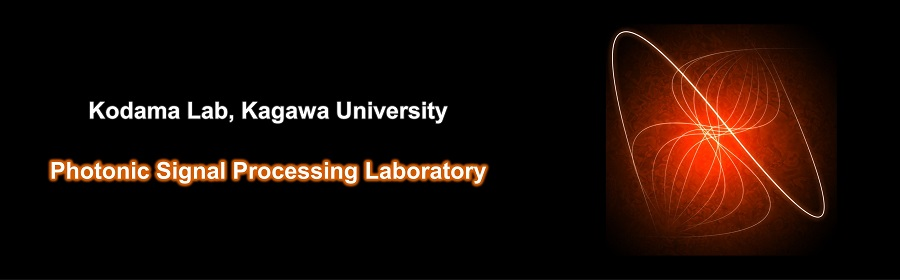

小玉研究室
Photonic Signal Processing Laboratory
Photonic Signal Processing Laboratory

2026年度は，研究室が始まってから7年目を迎えます。
"電気"、"光"、"水"といった自然科学の要素に着目して、数学や物理或いは生物に基づいた学術的な観点から面白さを発見し、熱心に取り組んでみたいと思う研究の仲間を待っています。同分野の研究開発・運用に携わる卒業生・修了生も出てきました。これからもさまざまな変化に適応しながら、産学官の関係者の皆様と一緒に研究を進展できると嬉しく思います。